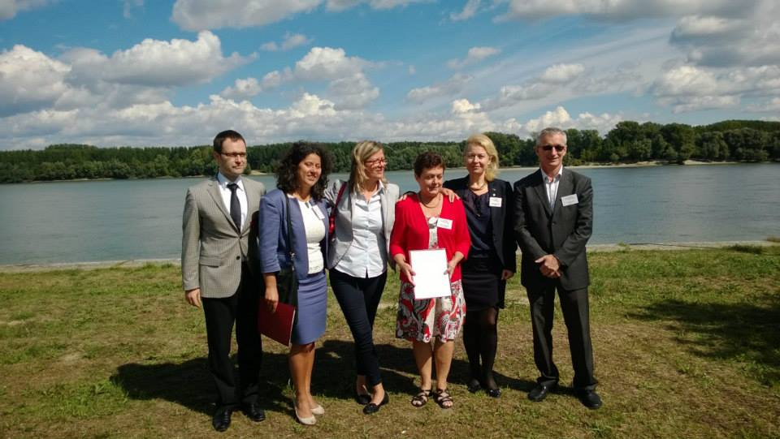

A new cluster initiative for PA 8 has been established. DanuClus is the response of the Working Group “Clusters of Excellence” to the new EU funding period 2014-2020. Inspired by an exchange of experiences with BSR Stars, the cluster platform of the Baltic Sea Region, the EUSDR working group proposed a similar model for future cluster work in the Danube Region.
A Core Group in DanuClus will coordinate projects for a wide target audience of clusters in the Danube Region. Concrete project ideas and funding opportunities are already under discussion – interested parties to take part in the consortia should consult the attached presentation about DanuClus and contact the coordinators of the Working Group (email to: sigrid.winkler(at)tmg.at).
DanuClus was established during the strategic-political meeting of the Working Group “Clusters of Excellence”, held on 11 April in Visegrad, Hungary.

The Memorandum of Undestanding was signed at the 2nd Workshop of the Priority Area 8 "Cluster networking and development prospects in the Danube Region" in Vukovar, Croatia, on 13 September 2013.
The undersigned parties have reached the following Memorandum of Understanding to cooperate on:
- The networking, inter-cluster cooperation and internationalisation of clusters within the Danube Region;
- The aggregation and exchange of knowledge, data, information and best practices on clusters in the practicing countries;
- The boosting of key factors for cluster excellence, such as awareness and capacity building, training, evaluation, innovation, and R&D, technology transfer, emerging industries and responses to societal challenges;
- The development and strengthening of cluster strategies at the regional, national, and EU level through the participation in joint projects;
- The partners agree to actively participate in the DanuClus (Danube Cluster Networks) initiativve.